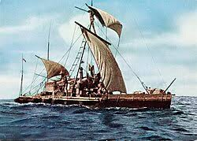
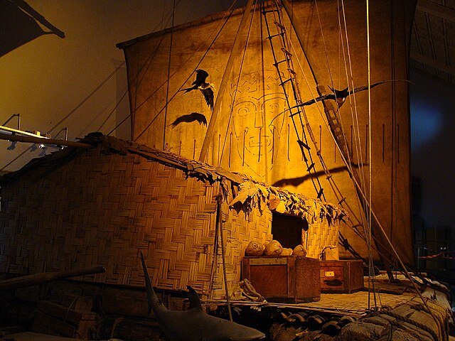

¿Qué fue el Kon-Tiki?
El Kon-Tiki fue una balsa construida con troncos de madera de balsa que el explorador noruego Thor Heyerdahl utilizó en 1947 para demostrar que los pueblos precolombinos de Sudamérica pudieron haber llegado a las islas de la Polinesia navegando por el océano Pacífico.sudamericanos podían haber navegado hasta la Polinesia. La expedición cruzó el océano Pacífico desde Perú hasta las islas de Tuamotu en Polinesia, recorriendo más de 8.000 kilómetros en 101 días. El nombre de la expedición proviene de una deidad inca y el viaje se convirtió en una famosa hazaña de la arqueología experimental.Propósito: Demostrar la teoría de Heyerdahl de que la Polinesia fue poblada desde América del Sur, utilizando los métodos de navegación y la tecnología de los pueblos antiguos. La balsa: La embarcación fue construida con nueve troncos de balsa y atada con cuerdas de cáñamo, tal como se cree que se construían las balsas sudamericanas de la época. Nombre: La balsa fue nombrada en honor a Kon-Tiki Viracocha, una antigua deidad solar adorada tanto por los preincaicos como por los antiguos polinesios. Éxito: El viaje fue un éxito y demostró la viabilidad de cruzar el océano en una embarcación primitiva, lo que generó un gran interés internacional y un libro de gran éxito escrito por Heyerdahl. Legado: La expedición se considera uno de los ejemplos más famosos de arqueología experimental y su historia fue inmortalizada en un libro y una película.
La travesía
La expedición partió desde Perú y recorrió más de 7,000 km a través del Pacífico en 101 días, llegando finalmente al archipiélago Tuamotu, en la Polinesia Francesa. El viaje fue una hazaña tanto científica como aventurera.: Partió del puerto del Callao, Perú, y terminó en el atolón Raroia, en las islas Tuamotu. Objetivo: Demostrar la viabilidad de una migración precolombina desde Sudamérica hacia la Polinesia utilizando embarcaciones primitivas
Legado
El éxito del viaje dio lugar a un documental premiado con un Oscar y a un libro traducido a decenas de idiomas. Actualmente, el Museo Kon-Tiki en Oslo, Noruega, conserva la balsa original y muestra detalles de esta increíble expedición. demostró que era posible la navegación prehistórica transpacífica desde Sudamérica a la Polinesia, aunque no probó que fuera la ruta de colonización. Por otro lado, inspiró a generaciones a través de su libro de 1950, ganador de un premio Óscar y traducido a más de 70 idiomas, que popularizó la aventura, la exploración y la resiliencia humana.